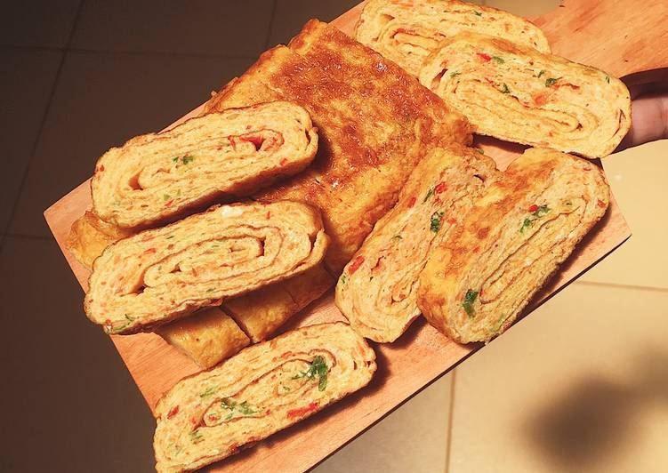

Telur Dadar Gulung Pelangi

Foto : cookpad.com
Bahan - Bahan :
4 butir telur
1 buah wortel
1 batang daun bawang
Secukupnya sambal goreng/cabe iris
Secukupnya mentega dan minyak untuk menggoreng
Secukupnya garam, dan lada
Cara Membuat